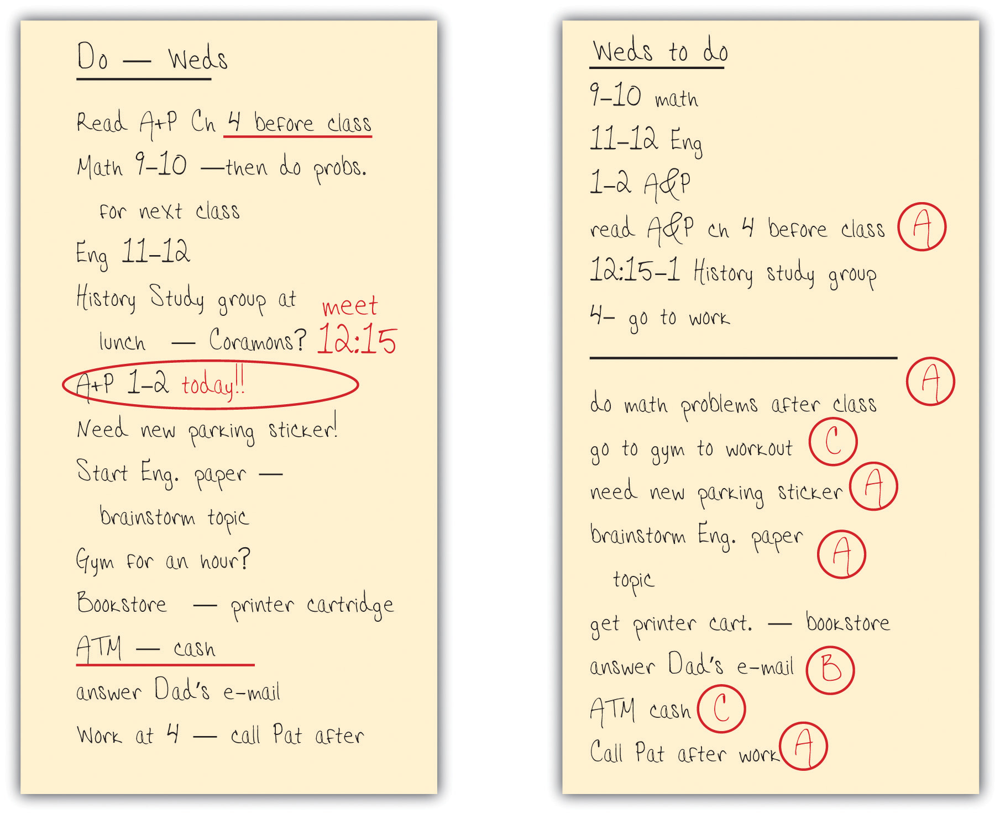

This is the most important part of this chapter. When you know what you want to do, why not just sit down and get it done? The millions of people who complain frequently about “not having enough time” would love it if it were that simple!
Time management isn’t actually difficult, but you do need to learn how to do it well.
People’s attitudes toward time vary widely. One person seems to be always rushing around but actually gets less done than another person who seems unconcerned about time and calmly goes about the day. Since there are so many different “time personalities,” it’s important to realize how you approach time. Start by trying to figure out how you spend your time during a typical week, using Activity 2.
See if you can account for a week’s worth of time. For each of the activity categories listed, make your best estimate of how many hours you spend in a week. (For categories that are about the same every day, just estimate for one day and multiply by seven for that line.)
| Category of activity | Number of hours per week |
|---|---|
| Sleeping | |
| Eating (including preparing food) | |
| Personal hygiene (i.e., bathing, etc.) | |
| Working (employment) | |
| Volunteer service or internship | |
| Chores, cleaning, errands, shopping, etc. | |
| Attending class | |
| Studying, reading, and researching (outside of class) | |
| Transportation to work or school | |
| Getting to classes (walking, biking, etc.) | |
| Organized group activities (clubs, church services, etc.) | |
| Time with friends (include television, video games, etc.) | |
| Attending events (movies, parties, etc.) | |
| Time alone (include television, video games, surfing the Web, etc.) | |
| Exercise or sports activities | |
| Reading for fun or other interests done alone | |
| Talking on phone, e-mail, Facebook, etc. | |
| Other—specify: ________________________ | |
| Other—specify: ________________________ |
Now use your calculator to total your estimated hours. Is your number larger or smaller than 168, the total number of hours in a week? If your estimate is higher, go back through your list and adjust numbers to be more realistic. But if your estimated hours total fewer than 168, don’t just go back and add more time in certain categories. Instead, ponder this question: Where does the time go? We’ll come back to this question.
Think about your time analysis in Activity 2. People who estimate too high often feel they don’t have enough time. They may have time anxiety and often feel frustrated. People at the other extreme, who often can’t account for how they use all their time, may have a more relaxed attitude. They may not actually have any more free time, but they may be wasting more time than they want to admit with less important things. Yet they still may complain about how much time they spend studying, as if there’s a shortage of time.
People also differ in how they respond to schedule changes. Some go with the flow and accept changes easily, while others function well only when following a planned schedule and may become upset if that schedule changes. If you do not react well to an unexpected disruption in your schedule, plan extra time for catching up if something throws you off. This is all part of understanding your time personality.
Another aspect of your time personality involves time of day. If you need to concentrate, such as when writing a class paper, are you more alert and focused in the morning, afternoon, or evening? Do you concentrate best when you look forward to a relaxing activity later on, or do you study better when you’ve finished all other activities? Do you function well if you get up early—or stay up late—to accomplish a task? How does that affect the rest of your day or the next day? Understanding this will help you better plan your study periods.
While you may not be able to change your “time personality,” you can learn to manage your time more successfully. The key is to be realistic. How accurate is the number of hours you wrote down in Activity 2? The best way to know how you spend your time is to record what you do all day in a time log, every day for a week, and then add that up. Make copies of the time log in Figure 2.4 "Daily Time Log" and carry it with you. Every so often, fill in what you have been doing. Do this for a week before adding up the times; then enter the total hours in the categories in Activity 2. You might be surprised that you spend a lot more time than you thought just hanging out with friends—or surfing the Web or playing around with Facebook or any of the many other things people do. You might find that you study well early in the morning even though you thought you are a night person, or vice versa. You might learn how long you can continue at a specific task before needing a break.
Figure 2.4 Daily Time Log

If you have work and family responsibilities, you may already know where many of your hours go. Although we all wish we had “more time,” the important thing is what we do with the time we have. Time management strategies can help us better use the time we do have by creating a schedule that works for our own time personality.
Time management for successful college studying involves these factors:
For every hour in the classroom, college students should spend, on average, about two hours on that class, counting reading, studying, writing papers, and so on. If you’re a full-time student with fifteen hours a week in class, then you need another thirty hours for rest of your academic work. That forty-five hours is about the same as a typical full-time job. If you work part time, time management skills are even more essential. These skills are still more important for part-time college students who work full time and commute or have a family. To succeed in college, virtually everyone has to develop effective strategies for dealing with time.
Look back at the number of hours you wrote in Activity 2 for a week of studying. Do you have two hours of study time for every hour in class? Many students begin college not knowing this much time is needed, so don’t be surprised if you underestimated this number of hours. Remember this is just an average amount of study time—you may need more or less for your own courses. To be safe, and to help ensure your success, add another five to ten hours a week for studying.
To reserve this study time, you may need to adjust how much time you spend in other activities. Activity 3 will help you figure out what your typical week should look like.
Plan for the ideal use of a week’s worth of time. Fill in your hours in this order:
Fixed life activities (sleeping, eating, hygiene, chores, transportation, etc.)
Now subtotal your hours so far and subtract that number from 168. How many hours are left? ____________ Then portion out the remaining hours for “discretionary activities” (things you don’t have to do for school, work, or a healthy life).
| Category of activity | Number of hours per week |
|---|---|
| Attending class | |
| Studying, reading, and researching (outside of class) | |
| Working (employment) | |
| Volunteer service or internship | |
| Sleeping | |
| Eating (including preparing food) | |
| Personal hygiene (i.e., bathing, etc.) | |
| Chores, cleaning, errands, shopping, etc. | |
| Transportation to work or school | |
| Getting to classes (walking, biking, etc.) | |
| Subtotal: | |
| Discretionary activities: | |
| Organized group activities (clubs, church services, etc.) | |
| Time with friends (include television, video games, etc.) | |
| Attending events (movies, parties, etc.) | |
| Time alone (include television, video games, surfing the Web, etc.) | |
| Exercise or sports activities | |
| Reading for fun or other interests done alone | |
| Talking on phone, e-mail, Facebook, etc. | |
| Other—specify: ________________________ | |
| Other—specify: ________________________ |
Note: If you find you have almost no time left for discretionary activities, you may be overestimating how much time you need for eating, errands, and the like. Use the time log in Figure 2.4 "Daily Time Log" to determine if you really have to spend that much time on those things.
Activity 3 shows most college students that they do actually have plenty of time for their studies without losing sleep or giving up their social life. But you may have less time for discretionary activities than in the past. Something, somewhere has to give. That’s part of time management—and why it’s important to keep your goals and priorities in mind. The other part is to learn how to use the hours you do have as effectively as possible, especially the study hours. For example, if you’re a typical college freshman who plans to study for three hours in an evening but then procrastinatesTo intentionally (often habitually) put something off until another day or time., gets caught up in a conversation, loses time to checking e-mail and text messages, and listens to loud music while reading a textbook, then maybe you actually spent four hours “studying” but got only two hours of actual work done. So you end up behind and feeling like you’re still studying way too much. The goal of time management is to actually get three hours of studying done in three hours and have time for your life as well.
Special note for students who work. You may have almost no discretionary time at all left in Activity 3 after all your “must-do” activities. If so, you may have overextended yourself—a situation that inevitably will lead to problems. You can’t sleep two hours less every night for the whole school year, for example, without becoming ill or unable to concentrate well on work and school. It is better to recognize this situation now rather than set yourself up for a very difficult term and possible failure. If you cannot cut the number of hours for work or other obligations, see your academic advisor right away. It is better to take fewer classes and succeed than to take more classes than you have time for and risk failure.
Following are some strategies you can begin using immediately to make the most of your time:
Procrastination is a way of thinking that lets one put off doing something that should be done now. This can happen to anyone at any time. It’s like a voice inside your head keeps coming up with these brilliant ideas for things to do right now other than studying: “I really ought to get this room cleaned up before I study” or “I can study anytime, but tonight’s the only chance I have to do X.” That voice is also very good at rationalizing: “I really don’t need to read that chapter now; I’ll have plenty of time tomorrow at lunch.…”
Procrastination is very powerful. Some people battle it daily, others only occasionally. Most college students procrastinate often, and about half say they need help avoiding procrastination. Procrastination can threaten one’s ability to do well on an assignment or test.
People procrastinate for different reasons. Some people are too relaxed in their priorities, seldom worry, and easily put off responsibilities. Others worry constantly, and that stress keeps them from focusing on the task at hand. Some procrastinate because they fear failure; others procrastinate because they fear success or are so perfectionistic that they don’t want to let themselves down. Some are dreamers. Many different factors are involved, and there are different styles of procrastinating.
Just as there are different causes, there are different possible solutions for procrastination. Different strategies work for different people. The time management strategies described earlier can help you avoid procrastination. Because this is a psychological issue, some additional psychological strategies can also help:
Calendar planners and to-do lists are effective ways to organize your time. Many types of academic planners are commercially available (check your college bookstore), or you can make your own. Some people like a page for each day, and some like a week at a time. Some use computer calendars and planners. Almost any system will work well if you use it consistently.
Some college students think they don’t need to actually write down their schedule and daily to-do lists. They’ve always kept it in their head before, so why write it down in a planner now? Some first-year students were talking about this one day in a study group, and one bragged that she had never had to write down her calendar because she never forgot dates. Another student reminded her how she’d forgotten a preregistration date and missed taking a course she really wanted because the class was full by the time she went online to register. “Well,” she said, “except for that time, I never forget anything!” Of course, none of us ever forgets anything—until we do.
Calendars and planners help you look ahead and write in important dates and deadlines so you don’t forget. But it’s just as important to use the planner to schedule your own time, not just deadlines. For example, you’ll learn later that the most effective way to study for an exam is to study in several short periods over several days. You can easily do this by choosing time slots in your weekly planner over several days that you will commit to studying for this test. You don’t need to fill every time slot, or to schedule every single thing that you do, but the more carefully and consistently you use your planner, the more successfully will you manage your time.
But a planner cannot contain every single thing that may occur in a day. We’d go crazy if we tried to schedule every telephone call, every e-mail, every bill to pay, every trip to the grocery store. For these items, we use a to-do list, which may be kept on a separate page in the planner.
Check the example of a weekly planner form in Figure 2.5 "Weekly Planner". (You can copy this page and use it to begin your schedule planning. By using this first, you will find out whether these time slots are big enough for you or whether you’d prefer a separate planner page for each day.) Fill in this planner form for next week. First write in all your class meeting times; your work or volunteer schedule; and your usual hours for sleep, family activities, and any other activities at fixed times. Don’t forget time needed for transportation, meals, and so on. Your first goal is to find all the blocks of “free time” that are left over.
Remember that this is an academic planner. Don’t try to schedule in everything in your life—this is to plan ahead to use your study time most effectively.
Next, check the syllabus for each of your courses and write important dates in the planner. If your planner has pages for the whole term, write in all exams and deadlines. Use red ink or a highlighter for these key dates. Write them in the hour slot for the class when the test occurs or when the paper is due, for example. (If you don’t yet have a planner large enough for the whole term, use Figure 2.5 "Weekly Planner" and write any deadlines for your second week in the margin to the right. You need to know what’s coming next week to help schedule how you’re studying this week.)
Figure 2.5 Weekly Planner

Remember that for every hour spent in class, plan an average of two hours studying outside of class. These are the time periods you now want to schedule in your planner. These times change from week to week, with one course requiring more time in one week because of a paper due at the end of the week and a different course requiring more the next week because of a major exam. Make sure you block out enough hours in the week to accomplish what you need to do. As you choose your study times, consider what times of day you are at your best and what times you prefer to use for social or other activities.
Don’t try to micromanage your schedule. Don’t try to estimate exactly how many minutes you’ll need two weeks from today to read a given chapter in a given textbook. Instead, just choose the blocks of time you will use for your studies. Don’t yet write in the exact study activity—just reserve the block. Next, look at the major deadlines for projects and exams that you wrote in earlier. Estimate how much time you may need for each and work backward on the schedule from the due date. For example,
You have a short paper due on Friday. You determine that you’ll spend ten hours total on it, from initial brainstorming and planning through to drafting and revising. Since you have other things also going on that week, you want to get an early start; you might choose to block an hour a week ahead on Saturday morning, to brainstorm your topic, and jot some preliminary notes. Monday evening is a good time to spend two hours on the next step or prewriting activities. Since you have a lot of time open Tuesday afternoon, you decide that’s the best time to reserve to write the first draft; you block out three or four hours. You make a note on the schedule to leave time open that afternoon to see your instructor during office hours in case you have any questions on the paper; if not, you’ll finish the draft or start revising. Thursday, you schedule a last block of time to revise and polish the final draft due tomorrow.
If you’re surprised by this amount of planning, you may be the kind of student who used to think, “The paper’s due Friday—I have enough time Thursday afternoon, so I’ll write it then.” What’s wrong with that? First, college work is more demanding than many first-year students realize, and the instructor expects higher-quality work than you can churn out quickly without revising. Second, if you are tired on Thursday because you didn’t sleep well Wednesday night, you may be much less productive than you hoped—and without a time buffer, you’re forced to turn in a paper that is not your best work.
Figure 2.6 "Example of a Student’s Weekly Planner Page with Class Times and Important Study Sessions" shows what one student’s schedule looks like for a week. This is intended only to show you one way to block out time—you’ll quickly find a way that works best for you.
Figure 2.6 Example of a Student’s Weekly Planner Page with Class Times and Important Study Sessions

Here are some more tips for successful schedule planning:
People use to-do lists in different ways, and you should find what works best for you. As with your planner, consistent use of your to-do list will make it an effective habit.
Some people prefer not to carry their planner everywhere but instead copy the key information for the day onto a to-do list. Using this approach, your daily to-do list starts out with your key scheduled activities and then adds other things you hope to do today.
Some people use their to-do list only for things not on their planner, such as short errands, phone calls or e-mail, and the like. This still includes important things—but they’re not scheduled out for specific times.
Although we call it a daily list, the to-do list can also include things you may not get to today but don’t want to forget about. Keeping these things on the list, even if they’re a low priority, helps ensure that eventually you’ll get to it.
Start every day with a fresh to-do list written in a special small notebook or on a clean page in your planner. Check your planner for key activities for the day and check yesterday’s list for items remaining.
Some items won’t require much time, but other activities such as assignments will. Include a time estimate for these so that later you can do them when you have enough free time. If you finish lunch and have twenty-five minutes left before your next class, what things on the list can you do now and check off?
Finally, use some system to prioritize things on your list. Some students use a 1, 2, 3 or A, B, C rating system for importance. Others simply highlight or circle items that are critical to get done today. Figure 2.7 "Examples of Two Different Students’ To-Do Lists" shows two different to-do lists—each very different but each effective for the student using it.
Figure 2.7 Examples of Two Different Students’ To-Do Lists
Use whatever format works best for you to prioritize or highlight the most important activities.
Here are some more tips for effectively using your daily to-do list:
If you’re both working and taking classes, you seldom have large blocks of free time. Avoid temptations to stay up very late studying, for losing sleep can lead to a downward spiral in performance at both work and school. Instead, try to follow these guidelines:
Living with family members often introduces additional time stresses. You may have family obligations that require careful time management. Use all the strategies described earlier, including family time in your daily plans the same as you would hours spent at work. Don’t assume that you’ll be “free” every hour you’re home, because family events or a family member’s need for your assistance may occur at unexpected times. Schedule your important academic work well ahead and in blocks of time you control. See also the earlier suggestions for controlling your space: you may need to use the library or another space to ensure you are not interrupted or distracted during important study times.
Students with their own families are likely to feel time pressures. After all, you can’t just tell your partner or kids that you’ll see them in a couple years when you’re not so busy with job and college! In addition to all the planning and study strategies discussed so far, you also need to manage your family relationships and time spent with family. While there’s no magical solution for making more hours in the day, even with this added time pressure there are ways to balance your life well:
Student athletes often face unique time pressures because of the amount of time required for training, practice, and competition. During some parts of the year, athletics may involve as many hours as a full-time job. The athletic schedule can be grueling, involving weekend travel and intensive blocks of time. You can be exhausted after workouts or competitions, affecting how well you can concentrate on studies thereafter. Students on athletic scholarships often feel their sport is their most important reason for being in college, and this priority can affect their attitudes toward studying. For all of these reasons, student athletes face special time management challenges. Here are some tips for succeeding in both your sport and academics:
What time(s) of day are you at your most alert?
_________________________
What time(s) of day are you at your least alert?
_________________________
What category of discretionary activity (not sleeping, working, studying, etc.) represents your largest use of time?
_________________________
Can you reduce the time you spend in that activity if you need more time for your coursework?
_________________________
For each of the following statements about time management, circle T for true or F for false:
| T | F | Think yourself into a positive mood before starting to study. |
| T | F | Always study just before going to sleep so that you’ll dream about the topic. |
| T | F | Break up larger projects into smaller parts and stages. |
| T | F | Get everything done on your to-do list before studying so that you’re not distracted. |
| T | F | When feeling stressed by a project, put it off until tomorrow. |
| T | F | Talk with your instructor or another student if you’re having difficulty. |
| T | F | Try to study at least three hours at a time before taking a break. |
| T | F | Reward yourself for successfully completing a task. |
| T | F | Avoid studying at times not written in on your weekly planner; these are all free times just for fun. |
| T | F | Whenever interrupted by a friend, use that opportunity to take a break for up to thirty minutes. |
| T | F | Turn off all electronic devices when reading an assignment except for your laptop if you use it to take notes. |
| T | F | Since people procrastinate when they’re distracted by other things that need doing, it’s best to delay studying until you’ve done everything else first. |
| T | F | Studying with a friend is a sure way to waste time and develop poor study habits. |
| T | F | Use a study journal to observe how you use your time and determine what things are keeping you from getting your work done. |
| T | F | There’s no reason to keep a weekly calendar if all your instructors have provided you with a syllabus that gives the dates for all assignments and tests. |
| T | F | Studying for a particular class is most effective immediately after that class meets. |
Without looking at your weekly or daily schedule, think about your typical week and the times you have free when not in class, working, studying, eating, socializing, and so on. List at least three “downtimes” when you don’t usually study that you can use for coursework when necessary.
_________________________________________
_________________________________________
_________________________________________
_________________________________________